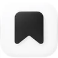

个性化推荐流
登录后读取你自己的 Pinterest 首页推荐,瀑布流无限滚动,看腻了点一下换一批。
功能
不是把网页塞进 iframe,而是按 Harness 原生面板重做的 Pinterest 工作区:推荐流来自你的账号,收藏保存在本机。
登录后读取你自己的 Pinterest 首页推荐,瀑布流无限滚动,看腻了点一下换一批。
左侧多画板收藏夹,支持搜索、拖拽调宽、右键改名删除;右边点 ♥,左边立刻出现。
大图 + 描述 + 作者,下面接着「更多类似」推荐;返回时保留原来的浏览位置。
点头像查看你在 Pinterest 上 pin 的图,无限滚动,可以继续收藏或者点开看详情。
左侧设置项、右侧详情:外观跟随系统 / 浅色 / 深色,语言中文 / English,改完立刻生效。
登录态只存本机(权限 600),随时一键退出;只读取 Pinterest,不写回你的账号。
怎么用
安装后侧边栏会多一个图标,点开就是双栏工作区。
在 Harness 里用 plugin_manager 从 GitHub 安装,重启一次 Harness 并刷新页面。
一键打开干净的 Chrome 窗口登录(Google 登录也可以),或手动粘贴 Cookie;登录后推荐流自动出现。
右侧刷推荐、搜索或粘贴链接;点 ♥ 进左侧,点开图片看详情与「更多类似」。
安装
需要 DeepSeek Harness(桌面版或 Web 版)与支持插件安装的 profile。直接从 GitHub 安装,不用先 clone:
plugin_manager {
action: "install_bundle",
target: "github:extrastu/pinterest-collect"
}
// 重启一次 Harness 并刷新页面;本地开发可换成仓库绝对路径数据与隐私
插件不处理你的账号密码,也不把收藏上传到任何第三方。
写在 ~/.dsh/pinterest-collect/collection.json,可随时备份或用编辑器查看。
Cookie 只写在本机 session.json;面板里「退出登录」即删除。
一键登录使用专用 profile,不会读取或改动你日常浏览器的登录状态。
网络请求只发往 pinterest.com / pinimg.com;不写回账号,不做任何上传。

在 iPhone / iPad 上把 X、Instagram、小红书、Pinterest 等 23 个平台的帖子保存成干净的文字、图片与视频。
常见问题
支持 DeepSeek Harness 的桌面版与 Web 版,系统上覆盖 macOS、Windows 与 Linux。一键登录需要本机安装 Chrome(或 Chromium / Edge / Brave);没有 Chrome 时可以改用「粘贴 Cookie」方式登录。
不会。收藏保存在本机的 ~/.dsh/pinterest-collect/collection.json,不会写回你的 Pinterest 账号;详情页提供「在 Pinterest 打开」,可以在原帖手动保存。
Pinterest 返回 X-Frame-Options: SAMEORIGIN,浏览器会拒绝任何跨源 iframe。插件由 Host 端读取 Pinterest 数据、由 React 渲染浏览界面,所以看起来像内嵌浏览器,但实际上是原生面板。
这是旧版本使用调试端口启动 Chrome 导致的;v1.2 改成两段式登录(登录窗口不带调试端口),更新到最新版本并重启 Harness 后即可正常使用 Google 登录。
可以。搜索、浏览与收藏不需要登录;个性化推荐流需要登录 Pinterest 后才会出现。
收藏与登录态都保存在 ~/.dsh/pinterest-collect/ 下,登录态文件权限为 600。面板里可以随时「退出登录」,只会删除本机保存的 Cookie。